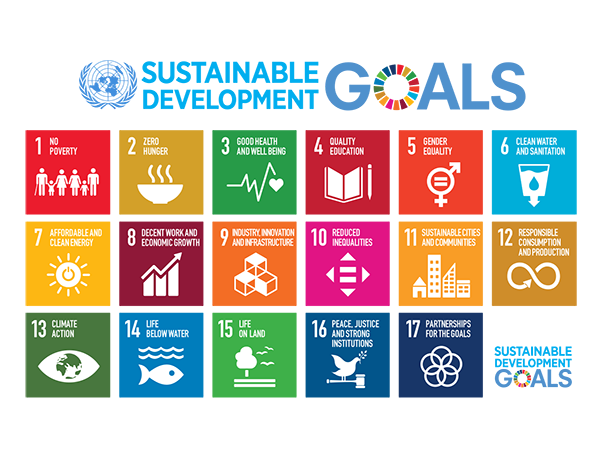

Quem Somos
A The Erzengel é uma entidade que nasceu para ajudar crianças abandonadas, ou orfãs, o nosso objetivo é criar um local adquado para uma boa reabilitação, onde elas possam se desenvolver e se auto conhecer, e assim, descobrir seu verdeiro potencial.
Segundo especialistas da ONU, mais de 150 milhões de crianças vivem nas ruas, sabemos que é humanamente impossível acabar com essa realidade em um piscar de olhos, mas podemos colaborar, mesmo que seja só um pouco, para que tenhamos um mundo melhor, e que essas crianças que foram ajudadas, no futuro possam resolver problemas complexos e carregar o legado da gratidão. Parafraseando o astrofísico, Neil Degrasse Tyson, o próximo Einstein pode estar passando fome em algum lugar da África... por que não no Brasil?
